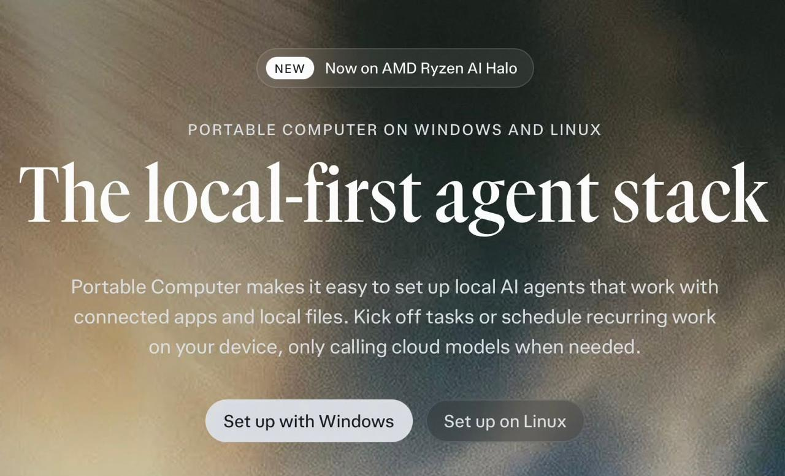

過去 26 小時只有 2 則貼文，都是同一件事（10/23 15:37）：主委提到 Perplexity 的「Portable Computer」可以在自己電腦上跑地端模型，並延伸出他的觀點：算力、token、模型終將商品化，好的使用體驗才是護城河。無業配。
perplexity 現在支援地端模型串 interface 一鍵安裝直接使用
（雖然目前 Mac 版本我測試一直閃退）自己的使用情境越來越依賴這類整合服務商，a) 記得需求和慣性，b) 可以支用各種模型不用每次誰推出新的就遷移一次、c) 夠無腦（這超重要，有空去養龍蝦又棄養換來換去測東西的終究是少數人）
比較不喜歡就是可能價格會被多收，但為了方便和實用可以接受，而現在多了地端支援，就讓價格敏感的用戶更能安心使用
算力, token, model 都會變大宗商品，好的使用體驗則不會，至少現在

#6504 為同分鐘的純圖片貼文：Perplexity 產品頁截圖，標語「The local-first agent stack」，標示「NEW：Now on AMD Ryzen AI Halo」、「Portable Computer on Windows and Linux」，說明可在裝置上設定本地 AI agent 連接 App 與本機檔案、排程重複工作，只在需要時呼叫雲端模型。
講解
這是什麼產品：Perplexity Computer 是它的「代理（agent）」服務——不只回答問題，而是能自己拆解任務、操作工具、讀寫檔案、排程執行。Portable Computer 則是它的地端版：負責拆任務的「協調者模型」、執行子任務的模型、以及整套代理框架都跑在使用者自己的硬體上。8 月底先上 NVIDIA DGX Spark 與 Linux RTX 顯卡電腦，9 月 24 日擴展到 Windows（含 AMD Ryzen AI Max 系列與 Ryzen AI Halo 開發平台），截圖上的「Now on AMD Ryzen AI Halo」就是指這次擴展。地端模型目前是 PPLX 27B（Perplexity 用 Qwen 3.8 27B 再訓練的版本）與 Qwen 3.8 27B，NVIDIA Nemotron 3.5 Lightning 標示「即將支援」，也可自帶模型與推論伺服器。
省錢機制：官方說在本機跑的部分不扣 Computer credits（不按 token 計費），只有當本地模型卡住、使用者同意後把那一步送去雲端頂尖模型（或使用網路搜尋）時才計費；送出前會用個資分類器標出敏感內容讓你確認。這正是主委說「讓價格敏感用戶更安心」的原因——日常重複性的雜事在本機免費跑，難題才付費上雲。門檻是要 Pro 或 Max 訂閱，以及至少 24GB 可供 GPU 使用的記憶體，所以硬體本身並不便宜。
要注意的出入：主委說他測的是「Mac 版本」一直閃退，但官方產品頁、Windows/AMD 公告與支援說明都只列 Windows 與 Linux，沒提到 macOS。可能他用的是非正式／測試版本，或是在 Mac 上自行嘗試；就公開資訊而言，Mac 目前不在正式支援名單上，閃退未必是 bug 而可能是尚未支援。另外，媒體引用的效能數據（例如本地 PPLX 27B 在 Perplexity 自建的知識工作測試拿 85.4%）都是 Perplexity 自己公布、未經獨立驗證；Moor Insights 也指出 Qwen 3.8 27B 號稱 26 萬 token 上下文，但超過約 10 萬就開始吃力，最難的寫程式測試中「本地＋雲端顧問」組合（73.0%）仍落後單用 Claude Opus 5（82.4%），只是成本較低。
投資觀點的脈絡：主委的結論「算力、token、模型都會變大宗商品，好的使用體驗不會」是一個關於 AI 價值鏈利潤落點的看法：當開源 27B 級模型已能在個人電腦上完成多數日常任務，模型之間的差異縮小、價格往下殺，掌握使用者習慣與記憶、能隨時切換底層模型的「整合層」（Perplexity 這類）更有黏著度。反面的思考是：整合層本身的轉換成本也不高，而且模型廠（OpenAI、Anthropic、Google）同樣在做自己的代理產品往上整合；另外「地端化」對硬體端（NVIDIA、AMD 大記憶體 PC 晶片）反而是需求來源。他自己也加了「至少現在」的保留，屬個人使用心得與推論，不是對特定標的的建議。